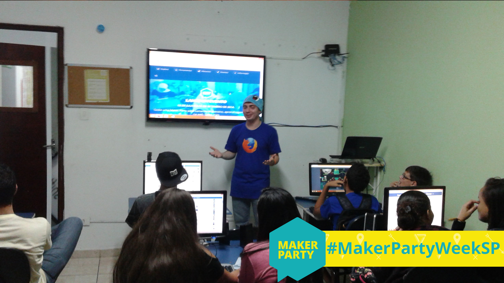

... é uma coleção de
ferramentas inovadoras
e
currículo para uma
comunidade global
que está ensinando a web.
Padrão de Alfabetização
para a Web
... o conjunto de
habilidades
e
competências
necessárias para a
leitura,
escrita
e
participando na web.
Alfabetização para web para qualquer pessoa
Oficinas na Baixada Santista
Oficinas na Baixada Santista
Oficinas com a Juventude Conectada
Oficinas com a Juventude Conectada
Maker Party Week São Paulo
- ~400 participantes
- Participantes entre 2 e 87 anos
- Muitos participantes repetiram oficinas
- 30+ oficinas
- 50h+ de atividades
Maker Party Week São Paulo
- 3 cidades
- 4 locais diferentes
- 20h+ em transporte urbano
- 350km+ em transporte rodoviário
- 100kg+ de material utilizado/transportado
Maker Party Week São Paulo

Maker Party Week São Paulo
Oficinas com a Juventude Conectada
Oficinas com a Juventude Conectada
Oficinas para toda a população de Gaurama
- Mais oficinas
- Mais oficineiros
- Mais cidades
- Mais escolas
- Hospedando
- Levando o projeto para escolas, comunidades, ONGs, universidades, ...
- ...